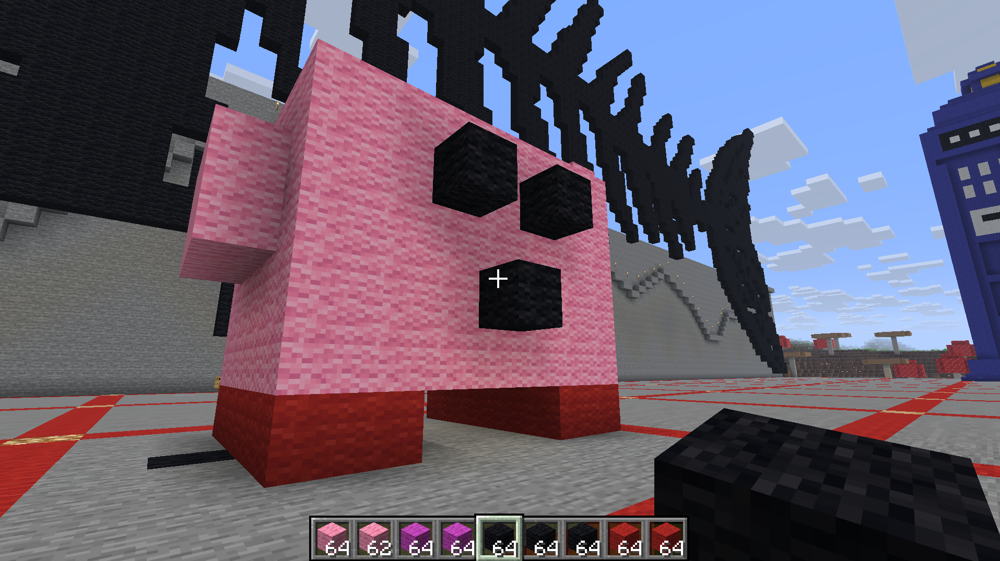
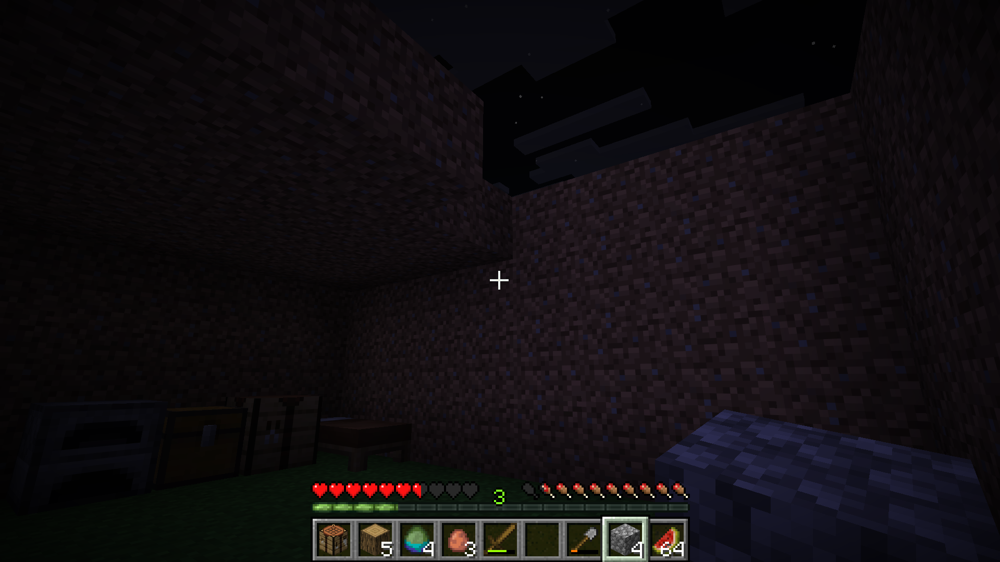
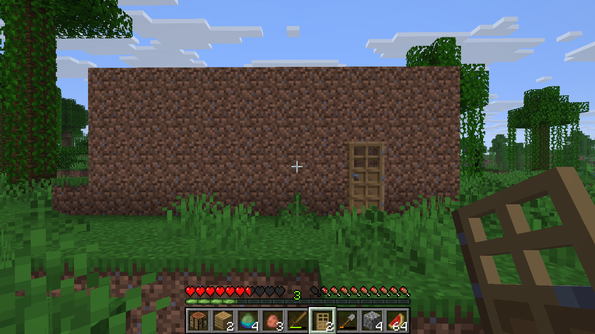

What I built for my Minecraft Art assignment for ART 74. I chose to build Kirby from the Kirby franchise made by Nintendo. Kirby, to me, holds significant cultural symbolism because he is the face of a lot of people's childhoods, including mine. I used to grow up playing Kirby games a ton. and have mini figures of some of the characters. Kirby also symbolizes love, charm, and kindness, through his design, and his actions throughout his own games. I couldn't really serve him justice as I am not very skilled with building in minecraft lol but I wanted to pay homage to one of the coolest characters ever. Published on Sep 30, 2026.